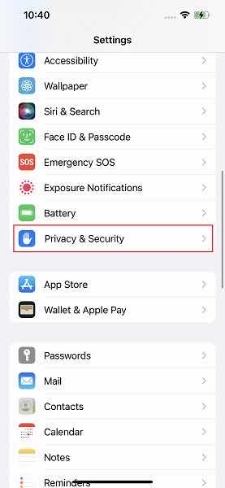
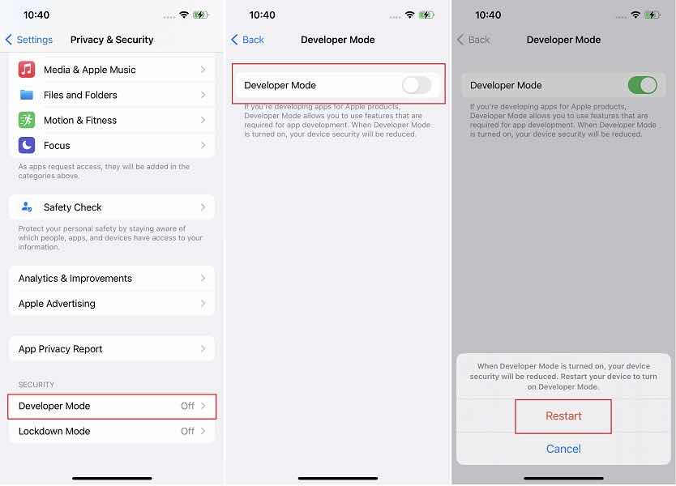
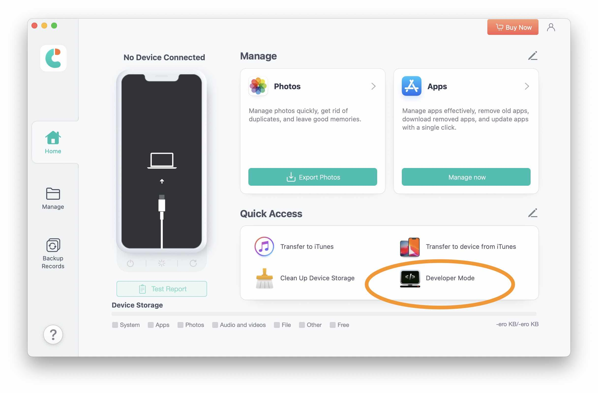

iOS 16 Developer Mode bị ẩn. Cách bật Developer Mode bị ẩn trên iPhone
Apple Ẩn Developer Mode Trên iOS 15 - 16. Nguyên Nhân & Cách Kích Hoạt
Trong các phiên bản iOS 15 và iOS 16, Apple đã có một số thay đổi quan trọng, trong đó có việc ẩn cài đặt "Developer Mode" khiến nhiều người dùng gặp khó khăn khi cần kích hoạt. Đây là một trở ngại lớn đối với các lập trình viên, kỹ thuật viên và những ai cần quyền truy cập sâu hơn vào hệ thống. Trong bài viết này, GCT CertApple sẽ phân tích nguyên nhân vì sao Apple lại ẩn chế độ này và hướng dẫn chi tiết cách kích hoạt Developer Mode trên iPhone.
Vì sao Apple Ẩn Developer Mode Trên iOS 15 & 16?
Trước iOS 15, Developer Mode luôn có sẵn và dễ dàng bật/tắt trong phần Cài đặt. Tuy nhiên, từ iOS 15 trở đi, đặc biệt là trên iOS 16, Apple đã thực hiện một số thay đổi.
-
Tăng cường bảo mật: Apple muốn hạn chế việc người dùng không có chuyên môn vô tình kích hoạt Developer Mode, dẫn đến nguy cơ bảo mật.
-
Kiểm soát ứng dụng sideloading: Developer Mode giúp cài đặt ứng dụng bên ngoài App Store dễ dàng hơn, nhưng Apple muốn kiểm soát việc này chặt chẽ hơn.
-
Bảo vệ người dùng phổ thông: Một số cài đặt trong Developer Mode có thể ảnh hưởng đến hiệu suất và trải nghiệm hệ điều hành, nên Apple quyết định ẩn nó đi.
Mặc dù có lý do chính đáng, nhưng đối với các nhà phát triển và người dùng chuyên sâu, việc ẩn Developer Mode gây ra không ít bất tiện. Vậy làm sao để kích hoạt nó?
Cách Bật Developer Mode Bị Ẩn Trên iPhone
Nếu bạn không tìm thấy Developer Mode trong Cài đặt, hãy thử các phương pháp sau:
Cách 1: Bật Developer Mode Trong Cài Đặt
-
Kết nối iPhone vào máy tính và mở Xcode (nếu bạn là lập trình viên, đây là cách dễ nhất).
-
Truy cập Cài đặt trên iPhone:
-
Vào Cài đặt (Setting) > Quyền riêng tư & Bảo mật (Privacy & Security).
-
Kéo xuống dưới, nếu thấy mục Developer Mode, nhấn vào và bật lên.
-
- Khởi động lại iPhone, sau đó thử lại nếu chưa thấy thay đổi.
Nếu cách này không hoạt động, bạn cần dùng phương pháp khác.
Cách 2: Sử Dụng Công Cụ Bên Thứ Ba (Không Cần Xcode)
Nếu bạn không có máy Mac hoặc không muốn cài đặt Xcode, có thể sử dụng các công cụ hỗ trợ như Tenorshare, 3uTools hoặc Sideloadly. Các bước thực hiện như sau:
-
Tải về công cụ hỗ trợ tương thích với iPhone của bạn (khuyến nghị sử dụng 3uTools hoặc Tenorshare).
-
Kết nối iPhone với máy tính qua cáp Lightning.
-
Mở phần mềm và tìm mục "Developer Mode".
-
Bật Developer Mode, sau đó kiểm tra trong Cài đặt > Quyền riêng tư & Bảo mật.
- 
- 
Sau khi tải app về, kết nối với iPhone, trên màn hình chính sẽ thấy phần Developer Mode, nhấn vào đó và cấp quyền thì sau đó Developer Mode sẽ được hiển thị trong phần Cài đặt (Setting) > Quyền riêng tư và Bảo mật (Privacy & Security).
Lưu ý: Nếu không thấy Developer Mode xuất hiện ngay, hãy thử khởi động lại thiết bị.
Cách 3: Cài Đặt Ứng Dụng Bằng Sideloading
Một số người dùng báo cáo rằng cài đặt một ứng dụng bằng chứng chỉ của nhà phát triển có thể giúp hiển thị Developer Mode. Bạn có thể thử:
-
Tải về một file IPA có chữ ký (chứng chỉ nhà phát triển) thông qua Sideloadly hoặc AltStore.
-
Cài đặt ứng dụng, sau đó kiểm tra xem Developer Mode có xuất hiện không.
-
Nếu xuất hiện, bật lên và khởi động lại iPhone.
Kết luận
Việc Apple ẩn Developer Mode trên iOS 15 - 16 khiến nhiều người gặp khó khăn, đặc biệt là những ai thường xuyên sử dụng sideload app hoặc tùy chỉnh hệ thống. Tuy nhiên, với những cách trên, bạn hoàn toàn có thể kích hoạt lại chế độ này dễ dàng.
Hy vọng bài viết này sẽ giúp bạn khắc phục được vấn đề và tận dụng tốt hơn chiếc iPhone của mình!
Nếu bạn cần chứng chỉ Apple để cài đặt ứng dụng và kích hoạt Developer Mode một cách ổn định hơn, hãy mua chứng chỉ Apple cho iPhone/iPad tại GCT CertApple để đảm bảo tính bảo mật và hiệu suất tốt nhất